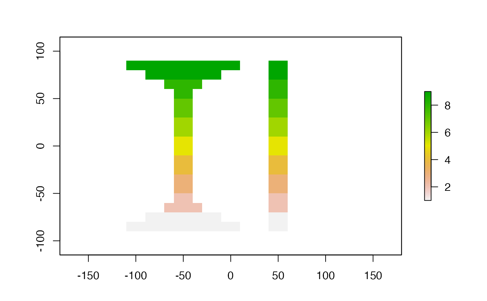

extract.RdExtract values from a Raster* object at the locations of spatial vector data. There are methods for points, lines, and polygons (classes from `sp` or `sf`), for a matrix or data.frame of points. You can also use cell numbers and Extent (rectangle) objects to extract values.
If y represents points, extract returns the values of a Raster* object for the cells in which a set of points fall.
If y represents lines, the extract method returns the values of the cells of a Raster* object that are touched by a line. If y represents polygons, the extract method returns the values of the cells of a Raster* object that are covered by a polygon. A cell is covered if its center is inside the polygon (but see the weights option for considering partly covered cells; and argument small for getting values for small polygons).
It is also possible to extract values for point locations from SpatialPolygons.
# S4 method for Raster,matrix
extract(x, y, method='simple', buffer=NULL, small=FALSE, cellnumbers=FALSE,
fun=NULL, na.rm=TRUE, layer, nl, df=FALSE, factors=FALSE, ...)
# S4 method for Raster,SpatialLines
extract(x, y, fun=NULL, na.rm=FALSE, cellnumbers=FALSE, df=FALSE, layer,
nl, factors=FALSE, along=FALSE, sp=FALSE, ...)
# S4 method for Raster,SpatialPolygons
extract(x, y, fun=NULL, na.rm=FALSE, exact=FALSE, weights=FALSE,
normalizeWeights=TRUE, cellnumbers=FALSE, small=TRUE, df=FALSE, layer, nl,
factors=FALSE, sp=FALSE, ...)
# S4 method for SpatialPolygons,SpatialPoints
extract(x, y, ...)Raster* object
points represented by a two-column matrix or data.frame, or SpatialPoints*; SpatialPolygons*; SpatialLines; sf spatial vector objects; Extent; or a numeric vector representing cell numbers
character. 'simple' or 'bilinear'. If 'simple' values for the cell a point falls in are returned. If 'bilinear' the returned values are interpolated from the values of the four nearest raster cells.
numeric. The radius of a buffer around each point from which to extract cell values. If the distance between the sampling point and the center of a cell is less than or equal to the buffer, the cell is included. The buffer can be specified as a single value, or as a vector of the length of the number of points. If the data are not projected (latitude/longitude), the unit should be meters. Otherwise it should be in map-units (typically also meters).
logical. If TRUE and y represents points and a buffer argument is used, the function always return a number, also when the buffer does not include the center of a single cell. The value of the cell in which the point falls is returned if no cell center is within the buffer. If y represents polygons, a value is also returned for relatively small polygons (e.g. those smaller than a single cell of the Raster* object), or polygons with an odd shape, for which otherwise no values are returned because they do not cover any raster cell centers. In some cases, you could alternatively use the centroids of such polygons, for example using extract(x, coordinates(y)) or extract(x, coordinates(y), method='bilinear').
function to summarize the values (e.g. mean). The function should take a single numeric vector as argument and return a single value (e.g. mean, min or max), and accept a na.rm argument. Thus, standard R functions not including an na.rm argument must be wrapped as in this example: fun=function(x,...)length(x). If y represents points, fun is only used when a buffer is used (and hence multiple values per spatial feature would otherwise be returned).
logical. Only useful when an argument fun is supplied. If na.rm=TRUE (the default value), NA values are removed before fun is applied. This argument may be ignored if the function used has a ... argument and ignores an additional na.rm argument
logical. If cellnumbers=TRUE, cell-numbers will also be returned (if no fun argument is supplied, and when extracting values with points, if buffer is NULL)
logical. If df=TRUE, results will be returned as a data.frame. The first column is a sequential ID, the other column(s) are the extracted values
logical. If TRUE the fraction of each cell that is (partly) covered by the polygon is extracted, not only the cells of which the centers are covered. This option is particularly useful if the polygons are small relative to the cells size of the Raster* object
logical. If TRUE the fraction of a cell that is covered is returned or used by fun. These can be used as weights can be used for averaging; see examples. If exact is FALSE, this is the approximate fraction of each cell that is covered by the polygon, rounded to 1/100
logical. If TRUE, weights are normalized such that they add up to one for each polygon
logical. If TRUE, factor values are returned, else their integer representation is returned
integer. First layer for which you want values (if x is a multilayer object)
integer. Number of layers for which you want values (if x is a multilayer object)
boolean. Should returned values be ordered to go along the lines?
boolean. Should the extracted values be added to the data.frame of the Spatial* object y? This only applies if y is a Spatial* object and, for SpatialLines and SpatialPolygons, if fun is not NULL. In this case the returned value is the expanded Spatial object
additional arguments (none implemented)
A vector for RasterLayer objects, and a matrix for RasterStack or RasterBrick objects. A list (or a data.frame if df=TRUE) if y is a SpatialPolygons* or SpatialLines* object or if a buffer argument is used (but not a fun argument). If sp=TRUE and y is a Spatial* object and fun is not NULL a Spatial* object is returned. The order of the returned values corresponds to the order of object y. If df=TRUE, this is also indicated in the first variable ('ID').
r <- raster(ncol=36, nrow=18, vals=1:(18*36))
###############################
# extract values by cell number
###############################
extract(r, c(1:2, 10, 100))
#> [1] 1 2 10 100
s <- stack(r, sqrt(r), r/r)
extract(s, c(1, 10, 100), layer=2, n=2)
#> layer.2 layer.3
#> [1,] 1.000000 1
#> [2,] 3.162278 1
#> [3,] 10.000000 1
###############################
# extract values with points
###############################
xy <- cbind(-50, seq(-80, 80, by=20))
extract(r, xy)
#> [1] 626 554 482 410 338 266 194 122 50
sp <- SpatialPoints(xy)
extract(r, sp, method='bilinear')
#> [1] 607.5 535.5 463.5 391.5 319.5 247.5 175.5 103.5 31.5
# examples with a buffer
extract(r, xy[1:3,], buffer=1000000)
#> [[1]]
#> [1] 586 587 588 589 590 591 592 593 620 621 622 623 624 625 626 627 628 629 630
#> [20] 631
#>
#> [[2]]
#> [1] 517 518 552 553 554 555
#>
#> [[3]]
#> [1] 445 446 481 482
#>
extract(r, xy[1:3,], buffer=1000000, fun=mean)
#> [1] 611.1 541.5 463.5
## illustrating the varying size of a buffer (expressed in meters)
## on a longitude/latitude raster
z <- extract(r, xy, buffer=1000000)
s <- raster(r)
for (i in 1:length(z)) { s[z[[i]]] <- i }
## compare with raster that is not longitude/latitude
crs(r) <- "+proj=utm +zone=17"
xy[,1] <- 50
z <- extract(r, xy, buffer=8)
for (i in 1:length(z)) { s[z[[i]]] <- i }
plot(s)

# library(maptools)
# data(wrld_simpl)
# plot(wrld_simpl, add=TRUE)
###############################
# extract values with lines
###############################
r <- raster(ncol=36, nrow=18, vals=1:(18*36))
cds1 <- rbind(c(-50,0), c(0,60), c(40,5), c(15,-45), c(-10,-25))
cds2 <- rbind(c(80,20), c(140,60), c(160,0), c(140,-55))
lines <- spLines(cds1, cds2)
extract(r, lines)
#> [[1]]
#> [1] 126 127 161 162 163 164 196 197 200 201 231 232 237 266 267 273 274 302 310
#> [20] 311 338 346 381 382 414 417 450 451 452 453 487 488
#>
#> [[2]]
#> [1] 139 140 141 174 175 177 208 209 210 213 243 244 249 250 279 286 322 358 359
#> [20] 394 429 430 465 501 537
#>
###############################
# extract values with polygons
###############################
cds1 <- rbind(c(-180,-20), c(-160,5), c(-60, 0), c(-160,-60), c(-180,-20))
cds2 <- rbind(c(80,0), c(100,60), c(120,0), c(120,-55), c(80,0))
polys <- spPolygons(cds1, cds2)
v <- extract(r, polys)
# mean for each polygon
unlist(lapply(v, function(x) if (!is.null(x)) mean(x, na.rm=TRUE) else NA ))
#> [1] 387.8158 329.3913
# v <- extract(r, polys, cellnumbers=TRUE)
# weighted mean
# v <- extract(r, polys, weights=TRUE, fun=mean)
# equivalent to:
# v <- extract(r, polys, weights=TRUE)
# sapply(v, function(x) if (!is.null(x)) {sum(apply(x, 1, prod)) / sum(x[,2])} else NA)
###############################
# extract values with an extent
###############################
e <- extent(150,170,-60,-40)
extract(r, e)
#> [1] 502 503 538 539
#plot(r)
#plot(e, add=T)